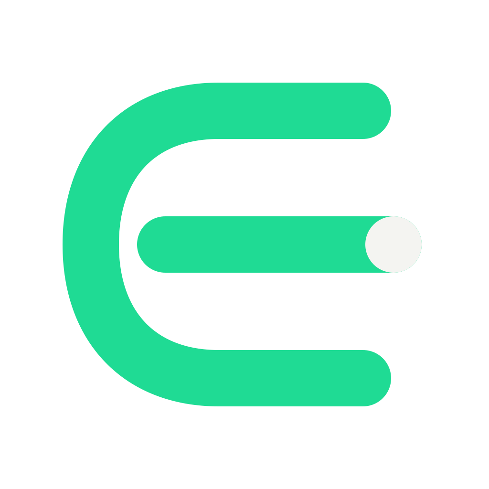
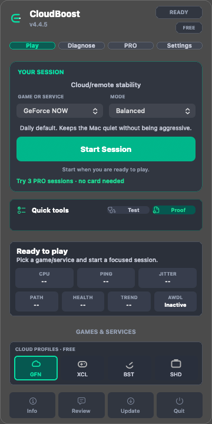

Cloud gaming e jogo remoto
Use a linha do tempo e o Network Preflight para investigar jitter, perda de pacotes e pressão local no GeForce NOW, Xbox Cloud Gaming, Moonlight ou Shadow. Uma medição até um alvo de teste não é o ping interno do jogo.

CloudBoostCloudBoost PRO · macOS
Quando o jogo trava, um número de ping não explica tudo. O PRO reúne a linha do tempo da sessão, testes de rede mais completos e um relatório para investigar o que aconteceu.
Pagamento único · CloudBoost 4.x · Um Mac · Sem assinatura

Comece no Free para sessões manuais no modo Balanced e verificações básicas. Escolha o PRO quando precisar de histórico, automação e evidências detalhadas das sessões.
| O que você precisa | Free | PRO |
|---|---|---|
| Perfis básicos de jogos e serviços e sessões manuais Balanced | Incluído | Incluído |
| Sinais básicos e restauração dos ajustes da sessão | Incluído | Incluído |
| Linha do tempo, p50/p95 e exportação PNG | Durante o teste PRO | Incluído |
| Network Preflight e diagnósticos avançados | Durante o teste PRO | Incluído |
| HUD, histórico e comparação com a sessão anterior | Durante o teste PRO | Incluído |
| Automação e modos avançados | Durante o teste PRO | Incluído |
| Licença | Grátis | US$10 · 4.x |
Use a linha do tempo e o Network Preflight para investigar jitter, perda de pacotes e pressão local no GeForce NOW, Xbox Cloud Gaming, Moonlight ou Shadow. Uma medição até um alvo de teste não é o ping interno do jogo.
Confira temperatura, estado de energia e atividade em segundo plano em sessões de League, Dota 2, Minecraft ou CrossOver. Sinais locais normais ajudam a decidir quando investigar o jogo ou a renderização.
Copie o Session Proof ou exporte o gráfico com o contexto da sessão. Compare execuções mudando uma configuração por vez. A comparação oferece evidências de diagnóstico, não um benchmark controlado.
Veja a sessão publicada de 42 minutos no League, a captura de tela e a amostra original. É uma observação do desenvolvedor, não uma prova de ganho de FPS ou redução garantida de latência.
Ver sessão medida e limitações (em inglês)Não. O CloudBoost observa o Mac e alvos de teste de rede e pode aplicar ajustes locais temporários. Ele não corrige rotas do provedor, servidores sobrecarregados, compilação de shaders ou o motor do jogo. Não modifica jogos nem contorna anti-cheat.
Não. US$10 compram a licença PRO da versão 4.x para um Mac. O pagamento é feito no Payhip e fornece uma chave de ativação. O app é baixado separadamente na página oficial de download.
O Free continua disponível. Apenas sessões de pelo menos um minuto consomem o teste. O resultado da última sessão permanece visível antes do retorno aos recursos básicos.
Fale com o suporte do CloudBoost para solicitar a transferência da licença antes de comprar outra chave.
A distribuição é independente e ainda não tem assinatura Developer ID nem notarização da Apple. A página de download explica a instalação e a verificação dos pacotes. Ajustes temporários protegidos podem exigir autorização de administrador do macOS.
Comece pelo teste. Fique com o PRO se os diagnósticos e as ferramentas forem úteis para o seu uso.